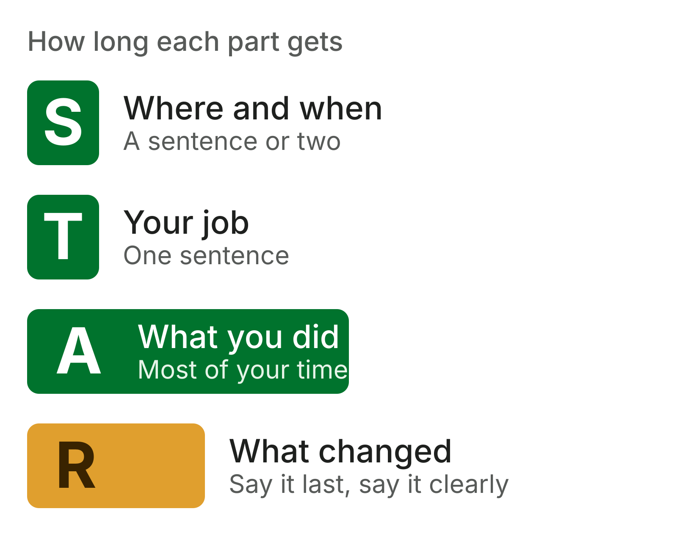
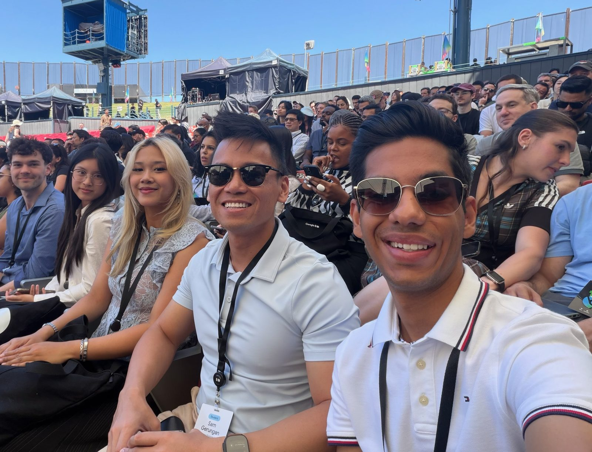
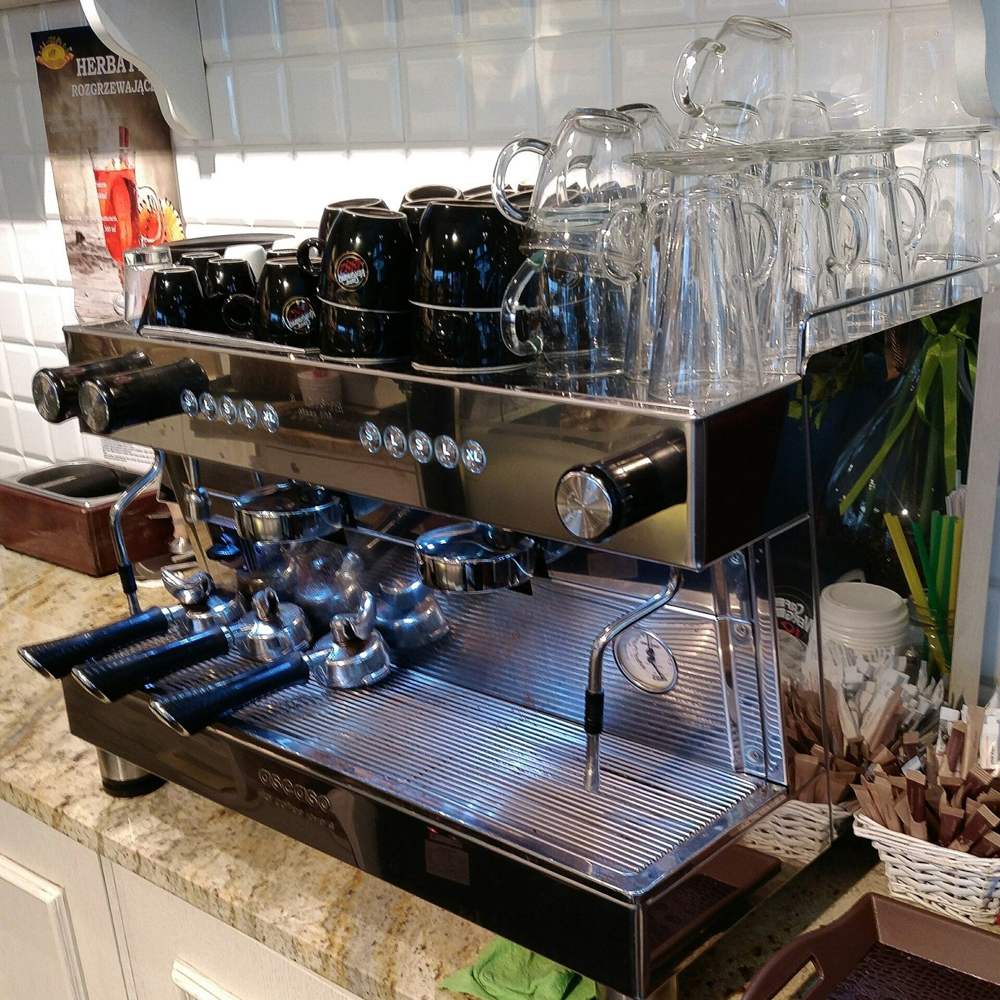
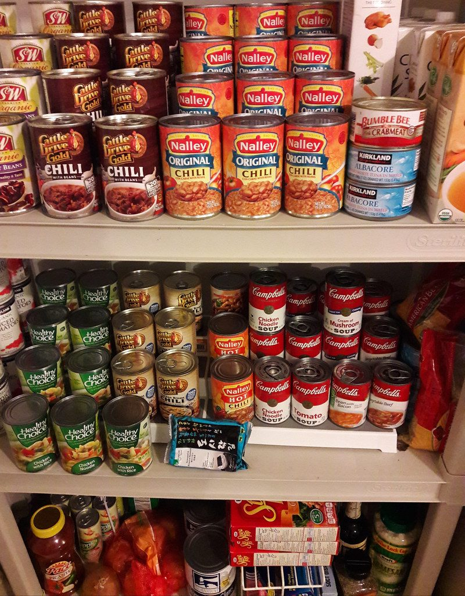
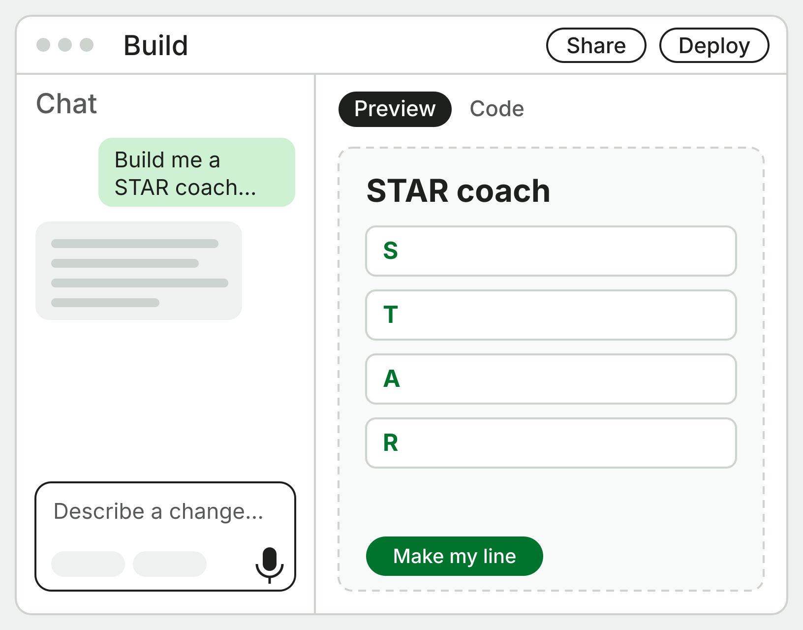
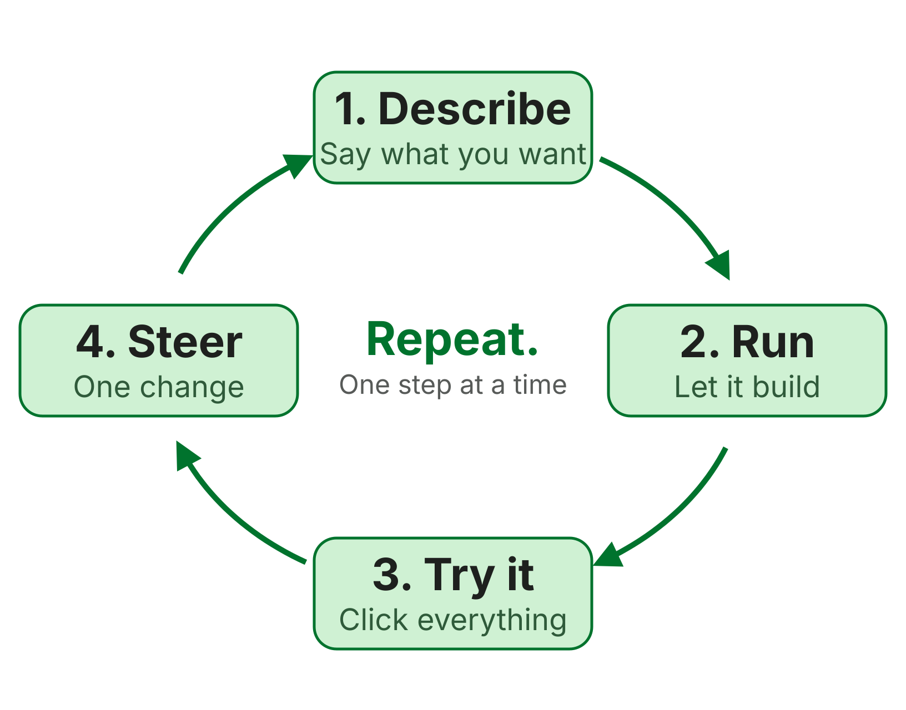

This week
Start with a story.
No intro. At 2:30 you’ll be talking to someone new.
The chapter on BevyGDG on Campus Riverside City College is an independent group; our activities and the opinions expressed here should in no way be linked to Google, the corporation.
Right now · 3 minutes
Find someone new. Tell them about a time you were…
3:00
Determined, responsible, detail-oriented, calm under pressure, or took initiative. Pick one. Names first, one minute each, no prep. Switch at 1:30.
Quick test
What actually happened in your partner’s story?
Not the quality. What did they do, and what changed because of it?
Mine would’ve sounded like this
What I say
“Yeah, I started a club. GDG. It’s kind of a tech club? We meet Thursdays. It’s pretty cool.”
What I wanted you to hear
I take initiative. When something I need doesn’t exist, I build it.
Your call
What would have made that story stick?
Shout it out.
There’s a name for your list
STAR. Situation, Task, Action, Result.
It started as a way to run job interviews. Interviewers still listen for it.
One letter at a time
Most of it is the A.
- Situation.Where and when. Just enough to follow.
- Task.What was on you. The problem or the goal.
- Action.What you did. Say “I,” not “we.”
- Result.What changed. A number, a reaction, what came next.

Sam’s story, with STAR
Letter
What it asks
Sam’s version
- SituationWhere and when?No club at RCC talked openly about careers.
- TaskWhat was on you?Start one: RCC’s first GDG chapter.
- ActionWhat did you do?Raised $12,000. Built weekly practice meetings.
- ResultWhat changed?Every Thursday, a trip to Google I/O, this room.
Same story, said twice
Before · 5 seconds
“I started a club. It’s kind of a tech club? We meet Thursdays.”
With STAR · about 20 seconds
“There was no club at RCC to talk openly about careers, so I started one. I raised $12,000 and built meetings where we practice. Now we meet every Thursday, we went to Google I/O, and you’re sitting in it.”
Land the R
End on something people can picture.
For Sam, that’s the chapter in the stands at Google I/O.

Watch for these
Where STAR stories go wrong
- All setup.Half the time on the S. Get to what you did.
- We, we, we.The team did great. What did you do?
- No ending.If nothing changed, say what you learned.
- Saying the quality.“I’m very responsible.” Let the story say it.
Example · Calm under pressure
Call the letter before I press.
- Saturday rush. Two people called out.Situation
- Keep the line moving with a new hire.Task
- I took every drink, she ran register.Action
- Waits stayed under ten minutes.Result

Same partner · 4 minutes
Tell it again. This time, with STAR.
4:00
30 seconds to plan. Then about 90 seconds each. Hit all four letters and spend most of it on the A. Switch at 2:00.
Same test
What changed in your partner’s story this time?
Hands up if you can say it in one sentence.
Your call
A resume gives you one line. What do you keep?
Your story took 90 seconds. Which words survive?
The trick
STAR is how you tell it. A resume line flips it.
Lead with what you did and what changed. The setup shrinks to a few words.
What each letter leaves behind
Sam’s story
What goes on the page
S
No club at RCC talked openly about careers.
Shrinks to a few words: RCC’s first
T
So I decided to start one.
Becomes the verb: Founded
A + R
Raised $12,000, built weekly meetings, went to Google I/O.
The proof, with a number: raised $12,000
Sam’s line, before and after
Thin
Started a tech club at school.
From the story
Founded RCC’s first Google Developer Group chapter and raised $12,000 for its events, including a hackathon for community college students.
Strong verb Proof
Any job counts. Any class counts.
- A Saturday shift
- A group project

A volunteer shift
Photos: MichalPL, CC BY-SA 4.0 · Dietmar Rabich, CC BY-SA 4.0 · Wonderlane, CC BY 2.0


Three more, thin to strong
What people write
The line from the story
Calm
Barista at a local café.
Ran the bar alone through a short-staffed Saturday rush, keeping waits under 10 minutes.
Responsible
Did a group project in bio.
Took over a dropped teammate’s section a week out, and the team presented on time.
Detail
Volunteered at a food bank.
Built a date-check list for weekend sorting that caught expired cans before they went out.
Write your line
Three minutes
- 1. Circle your result. What changed?
- 2. Turn your task into a strong verb.
- 3. Verb, what you did, the proof. One line.
Switching gears
Now, vibe coding.
You describe the app. AI writes the code. You steer.
Start it now. We’ll talk while it builds.
Do this first
- 1. Go to aistudio.google.com, then Build.
- 2. Type: “Build me a STAR story coach. Four boxes for S, T, A, and R, and a button that turns them into one resume line.”
- 3. Hit enter. Or build your own idea.
Keep personal info out of your prompts.
Where the name comes from
“Programming by vibes, not variables.”
Andrej Karpathy named it in February 2025. Collins Dictionary made it the Word of the Year.
AI Studio · Build
Find your way around
- Chat.Ask for changes here. The mic works too.
- Preview.Your app, running live. Click around in it.
- Code.Every file it wrote, when you’re curious.
- Share and deploy.A link anyone can open.

How it actually goes
Small loops, not one giant prompt.
Describe, run it, try it like a user, then steer with one change. Repeat until you like it.

Same app, two prompts
Vague
“Make a study app.”
Specific
“Flashcards for my anatomy class. I paste terms and definitions, it quizzes me, and the ones I miss come back sooner. Clean, simple, works on my phone.”
Who it’s for What it does, step by step
Best practices
How to steer it
- One change per message.Five asks at once and you can’t tell what broke.
- Say what you see.“The button covers the title on my phone,” not “fix it.”
- Point at it.Annotation mode: click part of the preview, then say the change.
- Ask it to explain.“What did you just change, and why?” You learn as you go.
When it breaks
It will break. That’s normal.
- Paste the error.Copy the exact message into the chat.
- Go back, don’t pile on.Restore the last version that worked instead of stacking fixes.
- Start fresh if it’s tangled.New chat, clearer first prompt. Often faster.
- Keep secrets out.No passwords, keys, or personal info. Ever.
Live demo
Watch me build one from scratch.
Steal anything you like for yours.
Build · 10 minutes
Make it yours.
10:00
One change at a time. Try annotation mode once. When it works, show the person next to you.
What just happened
Both halves were the same skill.
Say exactly what happened, or exactly what you want. People and AI both run on specifics.
Before next Thursday
Put your new line on your resume and your LinkedIn.
Then keep building your app. Bring it next week.
Thursdays, 2:30 to 3:30 PM · BLCIS A-210
GDG on Campus Riverside City College is an independent group; our activities and the opinions expressed here should in no way be linked to Google, the corporation.